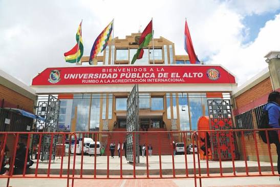
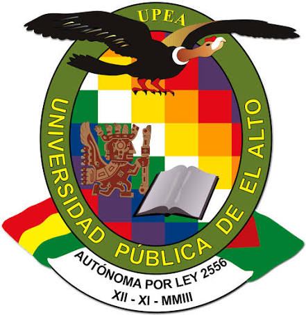

Universidad Pública de El Alto (UPEA)
Pública y autónomaLa Universidad Pública de El Alto (UPEA) es una universidad pública y autónoma ubicada en la zona Villa Esperanza, sobre la Av. Sucre A de la ciudad de El Alto. Cuenta con una amplia oferta académica en diferentes áreas del conocimiento, entre ellas ingeniería, tecnología, salud, educación, ciencias sociales y ciencias económicas. También desarrolla actividades de investigación, innovación e interacción social, orientadas a contribuir al desarrollo de la región y a la formación de profesionales con conocimientos científicos, tecnológicos y valores éticos.
📍 Villa Esperanza, Av. Sucre A
Ver ubicación en Google Maps Ver carreras